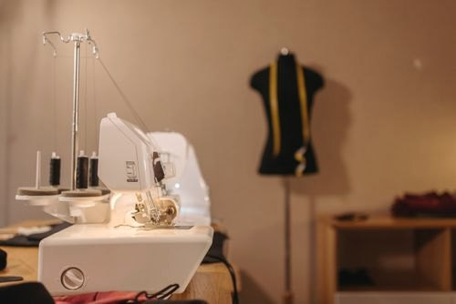

Winter 2026
The Lookbook
Six quiet looks, photographed in and around the Shoreditch atelier. A study in oat, chalk, champagne and espresso.
Look 01 — 06
Shop the edit The Winter Edit
Tailoring softened by linen, silk kept deliberately plain, and one good tote that goes with everything.
Studio notes
Behind the frames

The rail: six looks, one palette.

Final adjustments before the shoot.
A Shoreditch afternoon, just off Redchurch Street.